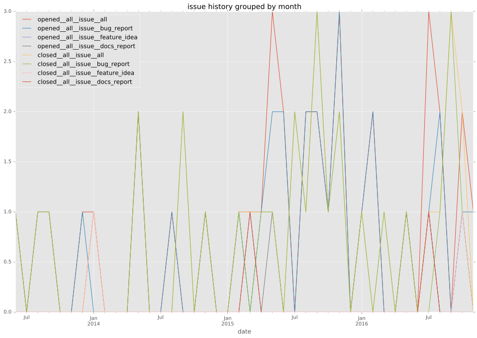
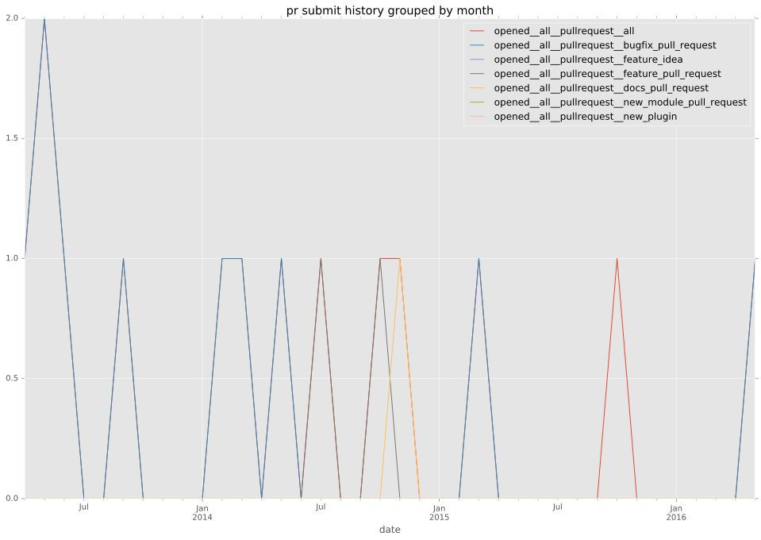
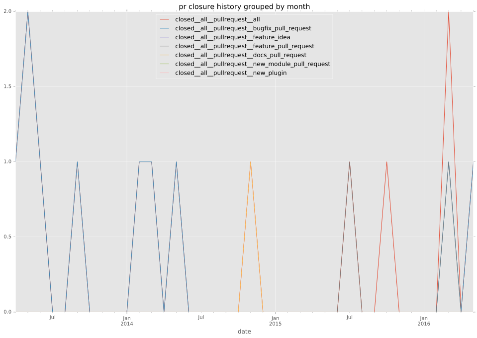

total issue counts
unknown: 1
feature pull request: 3
docs report: 3
pullrequest: 16
docs pull request: 2
bugfix pull request: 10
feature idea: 2
issue: 35
bug report: 30
issue history

pullrequest history


days open by issue type
bugfix pull request
count: 13
std: 100.849405373
min: 0
max: 365
median: 0.0
mean: 29.4615384615
all
count: 53
std: 126.646884038
min: 0
max: 622
median: 0.0
mean: 45.9056603774
pullrequest
count: 0
std: nan
min: nan
max: nan
median: nan
mean: nan
docs pull request
count: 3
std: 0.57735026919
min: 0
max: 1
median: 1.0
mean: 0.666666666667
docs report
count: 2
std: 7.07106781187
min: 0
max: 10
median: 5.0
mean: 5.0
feature pull request
count: 4
std: 295.216869437
min: 0
max: 622
median: 138.0
mean: 224.5
feature idea
count: 1
std: nan
min: 0
max: 0
median: 0.0
mean: 0.0
issue
count: 0
std: nan
min: nan
max: nan
median: nan
mean: nan
bug report
count: 29
std: 104.271658746
min: 0
max: 498
median: 1.0
mean: 39.3103448276
closures grouped by total days open